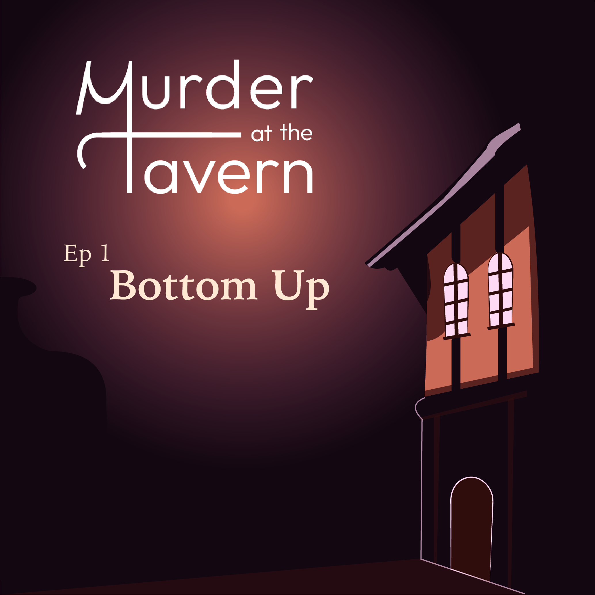
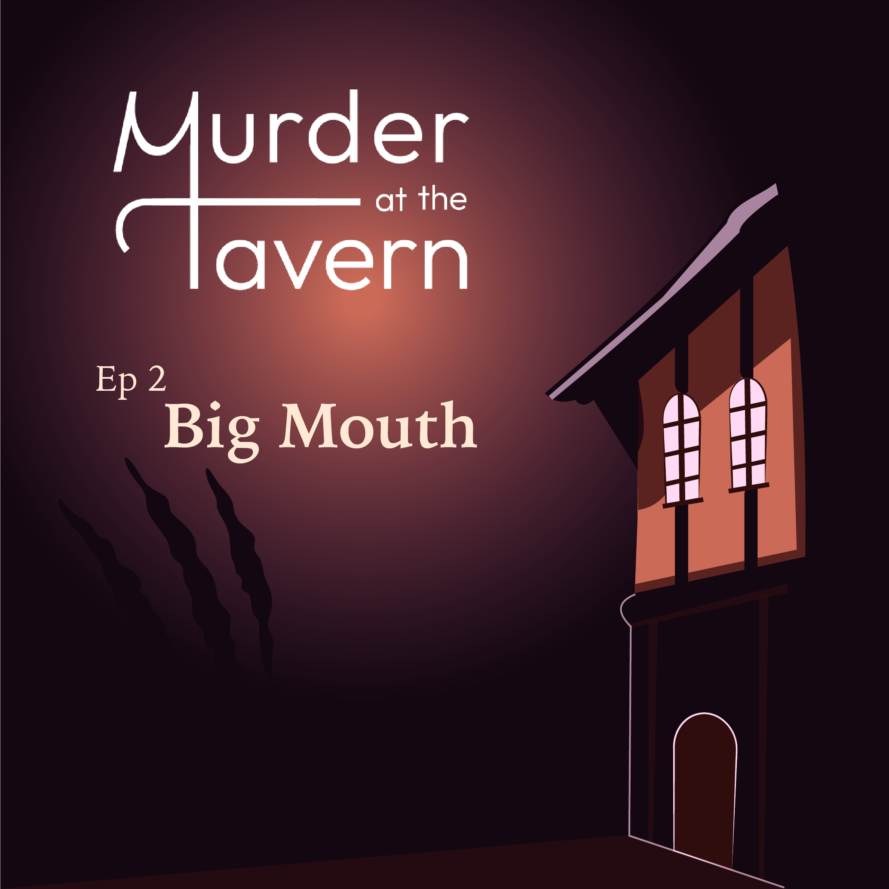
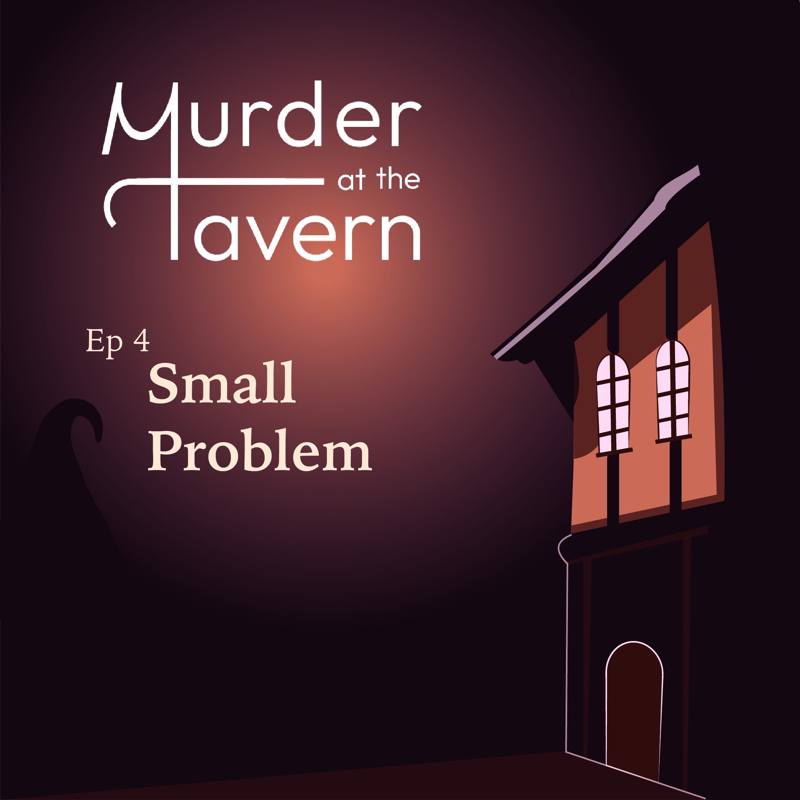
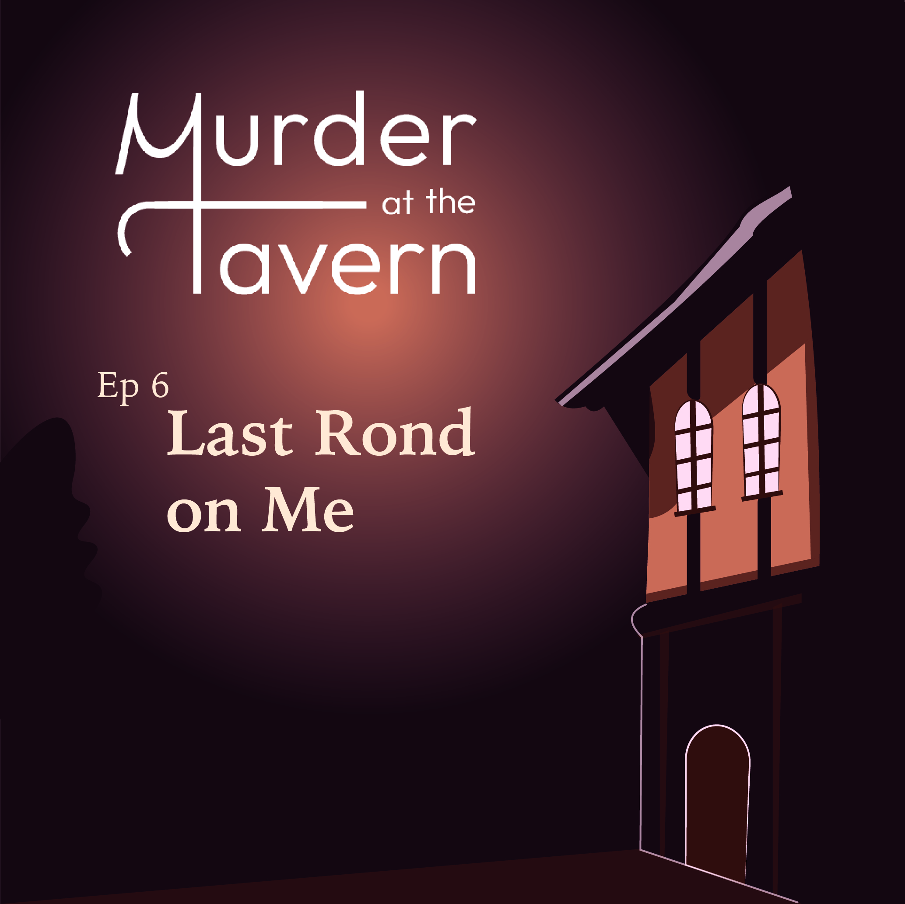

-

Episode 1
A murder grips de the tavern, a place where magic and secrets collide. Our detective steps into this shadowy world with one mission: uncover the truth. His first lead? A conversation with the mysterious bartender, a witch with sharp words and hidden knowledge. What lies behind the veil of this magical night? Discover the beginning of this dark mystery in de first episode of Murder at the Tavern.
-

Episode 2
The murder takes on a new twist as the detective meets de victim's best friend, a tough werewolf who hides more than he lets on. Between his teeth and hidden emotions lies a crucial piece of the puzzle. What does the werewolf know, and why is he so determined to keep it hidden?
-
Episode 3
In de dimly lit corners of the tavern, the detective faces the mysterious vampire, whose cryptic answers and hidden secrets leads the investigation down a darker path. Each word is a half-truth and each silence speaks louder than before. What secret is the vampire hiding, and will the detective be able to uncover the cryptic answers?
-

Episode 4
The dwarf appears te be nothing more than a jester in the tavern, his laughter echoing as if he has nothing to hide. Yet, beneath all that laughter might lie secrets he's unwilling to share. As the detective digs deeper into the truth, every playful remark and every smile seem to unveil another piece of the puzzle
-
Episode 5
The Orc hides behind a web of lies and a shaky alibi, but every evasive answer raises more questions. His unwillingness to provide clear details only fuels the detective's suspicions, leaving an unease tention in the taverne. As the detective pushes deeper, peeling back layers of half-truths and deflections, the shadows grow darker, and the mystery thickens with every passing moment.
-

Episode 6
The Pixie’s playful demeanor offers little more than lighthearted chatter, but her presence seems to echo the lingering mysteries of the tavern. As the detective pieces together the fragmented stories from the others, every clue points to an inevitable, shocking conclusion. The final moments are fraught with tension. Can the detective unmask the true killer before the weight of deception overwhelms him?
{kind=link}
{kind=link}
{kind=link}
{kind=link}
{kind=link}